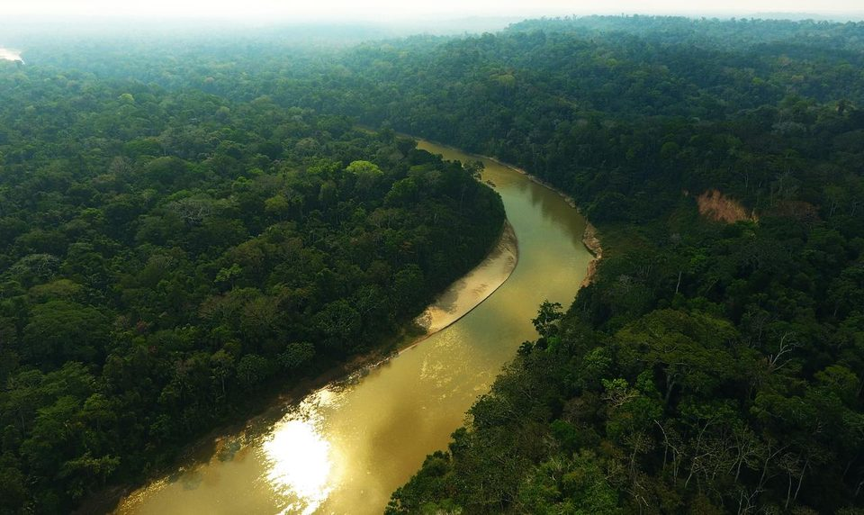
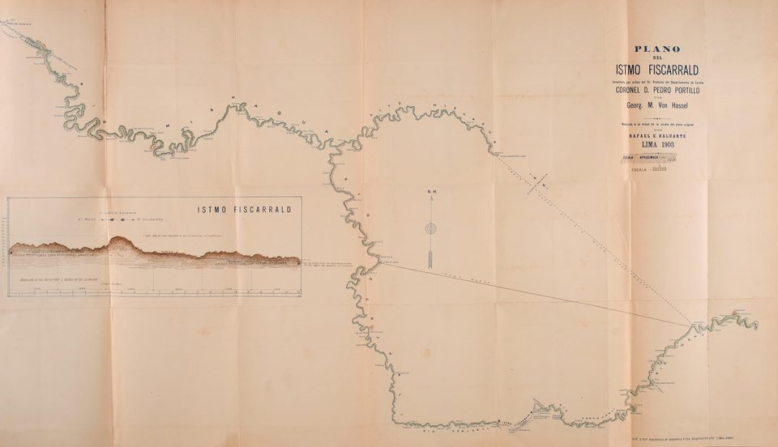
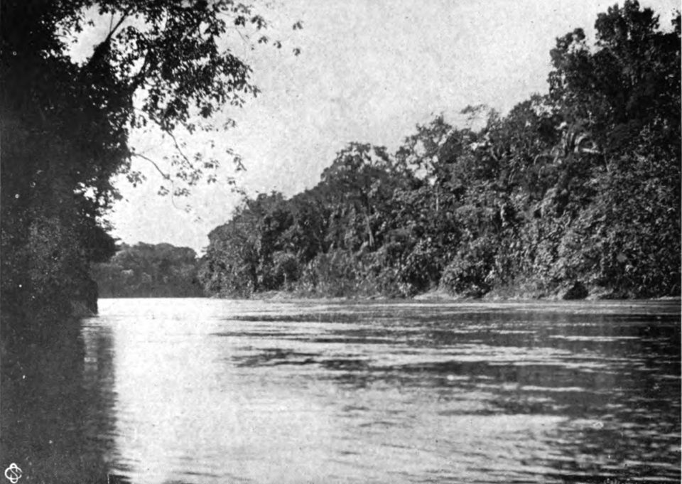
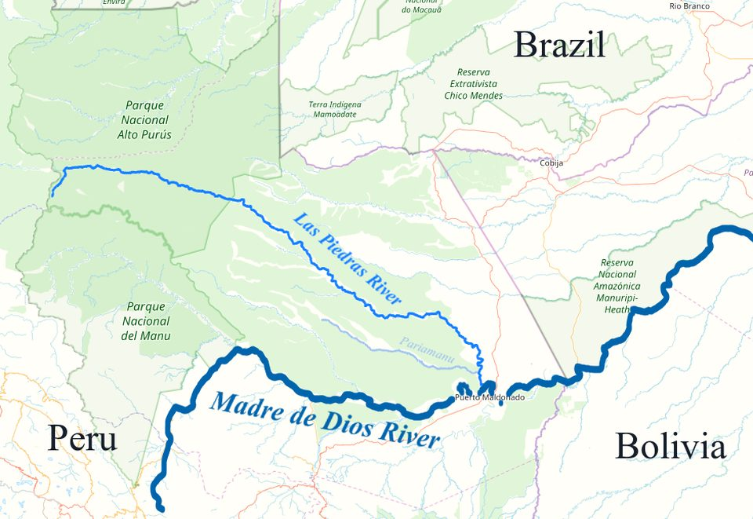
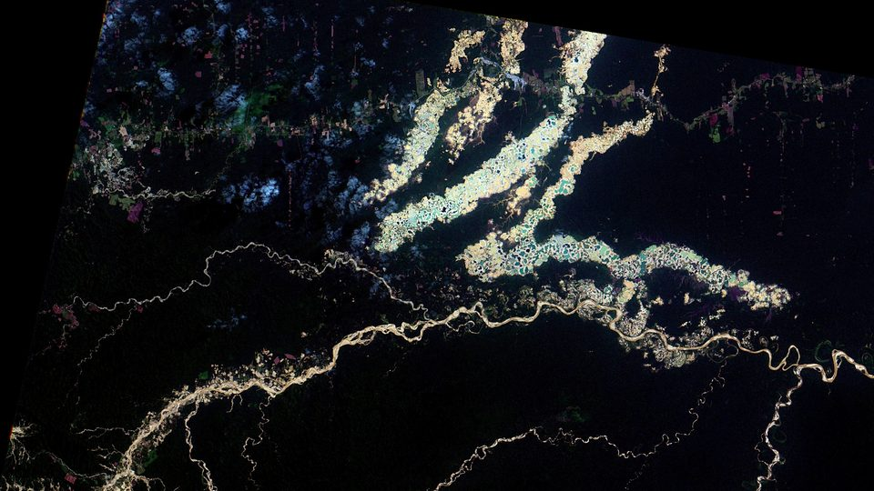

O povo mashco piro
Há mais de um século um povo da Amazônia peruana decidiu viver longe de nós. Não é um povo sem história: é um povo cuja história recente inclui uma fuga. Agora ele aparece nas praias dos rios, cada vez mais perto de estradas madeireiras — e cada aparição diz mais sobre a floresta em volta do que sobre quem sai dela.
- Onde
- Madre de Dios e Ucayali, Peru; Acre, Brasil
- Rios
- Las Piedras, Manu, Tahuamanu, Purús
- População
- ≈ 750, segundo o governo peruano (estimativa)
- Língua
- variante do yine (piro), família arawak
- Situação legal
- regime de proteção e não contato (Lei 28.736, de 2006)
- Em curso
- caso na Corte Interamericana, audiência em set. 2026
Na estação seca, entre maio e setembro, os rios do sudeste do Peru baixam e deixam à mostra longas praias de areia nas curvas. É nelas que, de tempos em tempos, aparecem grupos de homens, mulheres e crianças que não vivem em aldeia nenhuma conhecida, não constam de censo nenhum e não respondem a nome nenhum que nós tenhamos dado. São chamados de mashco piro. Entre si, segundo quem conseguiu ouvi-los, usam outra palavra.
Este dossiê não tem uma pergunta a resolver no sentido em que os outros têm. Não há pedra a datar nem texto a decifrar. Há um povo vivo que escolheu não ser encontrado, e um Estado, algumas empresas, algumas organizações indígenas e alguns tribunais discutindo, neste exato momento, quanto de floresta essa escolha merece. É desse desencontro que tratam as páginas abaixo.
01Quem são, e o quanto não sabemos
Comece pelo nome, porque ele já é um problema. "Mashco" foi o rótulo aplicado por vizinhos e por forasteiros, e carrega sentido pejorativo — algo próximo de "gente bravia" na boca de quem o usava. Agentes de proteção peruanos que falam yine relataram, em 2015, que o grupo com que conversavam na beira do rio preferia ser chamado de nomole, palavra traduzida como "parentes" ou "irmãos". Usamos aqui "mashco piro" porque é o nome que aparece em leis, mapas e processos — e é por ele que o leitor vai procurar —, mas registramos a ressalva.
A língua é o dado mais firme. Eles falam uma variante do piro, ou yine, da família arawak — a mesma língua das comunidades yine que vivem rio abaixo, como Monte Salvado e Diamante. É por isso que os poucos diálogos registrados aconteceram através de intérpretes yine. E é também a primeira pista sobre a origem do isolamento: povos que falam quase a mesma língua não se separaram há milênios. Separaram-se há pouco, e por alguma razão.

Sobre o tamanho do povo, a honestidade exige mostrar a dispersão. Em 1976 falava-se em vinte a cem pessoas. O IWGIA, organização internacional de apoio a povos indígenas, estimou cem a duzentos e cinquenta em 1998. O Ministério da Cultura do Peru trabalha hoje com cerca de setecentos e cinquenta, número repetido pela imprensa internacional desde 2024 e que faz deles, segundo a Survival International, o maior povo isolado conhecido do mundo.
02A borracha, o istmo e a fuga
O isolamento dos mashco piro tem data aproximada, e ela coincide com o pior capítulo da história amazônica do fim do século XIX. Quando o ciclo da borracha chegou ao alto Ucayali, nos anos 1880, a escravidão já estava formalmente abolida no Peru desde 1854 — e foi substituída pela peonagem por dívida, em que o trabalhador indígena nunca terminava de pagar o que o patrão dizia que ele devia. Em 1891, a maior parte dos piro do Urubamba estava endividada com um único seringalista, Carlos Fermín Fitzcarrald.
Fitzcarrald entrou para a história, e para o cinema, por uma façanha de engenharia: em 1894 abriu a passagem por terra entre a bacia do Ucayali e a do Madre de Dios, arrastando uma embarcação a vapor por um istmo de poucos quilômetros. O que o cinema não contou é o que veio com a passagem. Com ela, o alto Manu — território mashco piro — ficou ao alcance dos seringalistas. Os relatos da época e a historiografia posterior descrevem a matança de grande parte dos mashco piro do alto Manu pelo bando armado de Fitzcarrald entre 1893 e 1894. Fontes regionais falam em centenas de mortos; nenhum número dessa época é confiável, e é justo dizer só isso: foi um massacre, e ele está documentado.

Depois do massacre veio a captura. Entre 1897 e 1909, segundo a historiografia regional, mashco e piro foram escravizados ao longo do Purús e do Madre de Dios por Carlos Scharff, que fora capataz de Fitzcarrald. Há registro de levantes — como o de 1903 no Tahuamanu, em que trabalhadores de seringal foram mortos e, em represália, indígenas foram caçados.
A leitura que a antropologia faz desse período é direta, e é a mais importante deste dossiê: o grupo que hoje chamamos de mashco piro é, muito provavelmente, descendente de quem fugiu. Gente que viu o que o contato com os seringais produzia e se embrenhou nas cabeceiras dos rios, onde os barcos não chegavam. O isolamento não é um estado original. É uma resposta — e uma resposta que deu certo por mais de cem anos.

03O território no papel
O território dos mashco piro não respeita fronteira: vai das cabeceiras do Madre de Dios, atravessa o Las Piedras e o Tahuamanu e chega às nascentes do Acre, do Iaco, do Chandless e do Purús, já no Brasil. No papel, porém, ele está fatiado em pedaços com nomes e datas diferentes.
Do lado peruano, o pedaço maior é a Reserva Territorial Madre de Dios, criada em 22 de abril de 2002 por resolução do Ministério da Agricultura, com 829.941 hectares. Mais ao norte, no alto Purús, há a Reserva Indígena Mashco Piro, de 816.057 hectares, criada como reserva territorial em 1997 e convertida em reserva indígena em julho de 2016 — ela fica sobreposta ao Parque Nacional Alto Purús. O Parque Nacional do Manu, ao sul, também abriga grupos isolados. As duas cifras de reserva, quase iguais, são confundidas com frequência na imprensa; são áreas diferentes.
A lei que rege tudo isso é a Lei 28.736, de maio de 2006, conhecida como Lei PIACI — sigla para povos indígenas em isolamento e em contato inicial. Ela consagra o princípio do não contato: o Estado não procura esses povos, e restringe a entrada de terceiros nas reservas. Mas a lei, em sua redação original, admitia exceções para exploração de recursos considerada de "necessidade pública" — e é nessa brecha que boa parte do conflito se instala.
O problema central é que a reserva de 2002 ficou menor que o território. A FENAMAD, federação indígena do Madre de Dios, vinha documentando a presença dos isolados desde 1999 e propôs uma área muito maior; segundo a federação, a reserva criada reconheceu cerca de um terço do que fora identificado. Em setembro de 2016, uma comissão multissetorial do Estado aprovou o estudo que convertia a reserva territorial em reserva indígena — categoria de proteção mais forte — e a ampliava em cerca de 240 mil hectares. Dez anos depois, isso ainda não aconteceu. Parte da área de ampliação está ocupada por concessões florestais: em fevereiro de 2025, uma reportagem do OjoPúblico contou catorze delas ali dentro.

Do lado brasileiro, o passo mais recente é de janeiro de 2025: a Funai publicou portaria de restrição de uso da Terra Indígena Mashco do Rio Chandless, no Acre, com pouco mais de 538 mil hectares nos municípios de Santa Rosa do Purus, Manoel Urbano e Sena Madureira. A restrição proíbe a entrada sem autorização e a extração de recursos enquanto a terra não for demarcada.
04Os aparecimentos, 2007–2015
Durante a maior parte do século XX os mashco piro foram uma presença inferida: trilhas, acampamentos abandonados, roças saqueadas, um encontro violento aqui e ali — como o ataque fatal a madeireiros no Tahuamanu, em agosto de 1998. A partir do fim dos anos 2000 isso muda. Eles começam a ser vistos, e com frequência crescente.
Em setembro de 2007, ecólogos sobrevoando o Alto Purús filmaram de helicóptero cerca de vinte pessoas na margem do Las Piedras. Em 2011, o padrão já era outro: grupos passaram a aparecer nas praias do alto Madre de Dios, à vista de barcos de turismo que desciam para o Manu. E 2011 foi também o ano em que a tensão voltou a fazer vítimas. Em outubro, um guarda-parque foi ferido gravemente por flecha no posto de controle de Pakitza, no Manu. Em novembro, Nicolás "Shaco" Flores, um homem matsigenka da comunidade de Diamante que havia anos deixava os isolados colherem em sua roça e tentava se aproximar deles, foi morto por uma flecha no peito.
Em dezembro de 2014, um grupo grande — os moradores falaram em até duzentas pessoas — entrou na comunidade yine de Monte Salvado, no Las Piedras, quando a maior parte dos moradores estava fora por causa de eleições locais. Levaram panelas, facões, corda e comida, mataram animais domésticos e voltaram para a mata. Cinquenta e cinco pessoas que tinham se abrigado no posto de vigilância foram retiradas. Era, segundo a FENAMAD, a terceira vez naquele ano que o grupo chegava à comunidade; a federação chamou o episódio de "ato de desespero", provocado por madeireiros ilegais e narcotraficantes no território.
Em 2015 o Ministério da Cultura instalou um posto permanente no alto Madre de Dios, com agentes que falavam yine. Pela primeira vez houve conversa regular, na beira do rio: alguns indivíduos voltavam a cada poucos dias, pediam bananas e facões, e deixaram claro que não queriam morar em aldeia. No mesmo ano, em maio, um jovem matsigenka de Shipetiari, Leonardo Pérez, foi morto por flecha quando um grupo de cerca de trinta mashco piro passou pela comunidade.
052024: o ano das flechas
Nos dias 26 e 27 de junho de 2024, mais de cinquenta mashco piro apareceram numa praia do Las Piedras, diante de Monte Salvado, pedindo comida aos moradores da outra margem. Em julho, a Survival International divulgou fotografias e vídeo do encontro, feitos por moradores, ressaltando que a praia ficava a poucos quilômetros de concessões madeireiras. As imagens correram o mundo.
O que veio depois mostrou que a praia era o lado tranquilo da história. Em 27 de julho, segundo a FENAMAD, um madeireiro foi ferido por flecha num acampamento de extração ilegal. Em 29 de agosto, na quebrada San Juan, bacia do rio Pariamanu — afluente do Las Piedras —, um grupo de trabalhadores abrindo uma trilha na área de ampliação da reserva foi atacado. Dois corpos foram recuperados, com ferimentos de flecha, e levados a Puerto Maldonado.
O número de mortos é o primeiro ponto em que as versões divergem, e a divergência merece ser mostrada como é. A FENAMAD e a imprensa internacional falaram em dois mortos, um ferido e dois ou mais desaparecidos. A subprefeita regional de Madre de Dios, com base no relato do único sobrevivente, chegou a falar em cinco mortos; só dois corpos foram recuperados e identificados. O segundo ponto é o que o grupo fazia ali: a primeira versão foi de limpeza numa concessão de castanha; no local foram encontrados indícios de extração ilegal de madeira. Também não houve confirmação oficial de que os trabalhadores fossem empregados da madeireira detentora da concessão vizinha.
Essa madeireira é a Maderera Canales Tahuamanu, uma das empresas com concessões no território usado pelos mashco piro, que abriu cerca de 190 quilômetros de estradas para caminhões na região, segundo a imprensa internacional. Em 30 de agosto, um dia depois do ataque, o FSC — o selo internacional de manejo florestal — suspendeu a certificação da empresa por oito meses, citando a localização da concessão em relação ao território dos isolados. A Survival chamou a suspensão de "metade do necessário"; o Ministério da Cultura anunciou investigação com o Ministério Público e a polícia.
Em 26 de outubro, numa quebrada perto de Monte Salvado, cerca de cem mashco piro armados foram avistados, e um agente de proteção da FENAMAD foi atingido por flecha no ombro. A comunidade yine de Monte Salvado foi evacuada para Puerto Maldonado em voos da Força Aérea. Somados os avistamentos do ano, segundo levantamento citado pela Mongabay, mais de quatrocentas pessoas foram vistas em 2024.
062025–2026: a disputa no papel
A briga de 2025 e 2026 não se deu na floresta, mas em comissões, projetos de lei e tribunais — e é ali que o futuro dos mashco piro está sendo decidido.
Na comissão. Em dezembro de 2024, a comissão multissetorial que deveria concluir a ampliação da reserva voltou a se reunir. Segundo atas obtidas pelo OjoPúblico, a vice-ministra de Políticas e Supervisão do Desenvolvimento Agrário, do Ministério da Agricultura, opôs-se à ampliação e defendeu a manutenção das catorze concessões florestais na área; a votação foi adiada. O governo regional de Madre de Dios e prefeituras da região também se opõem.
No Congresso. Em 26 de agosto de 2025, o deputado Juan Carlos Mori Celis apresentou o Projeto de Lei 12.215, que muda a Lei PIACI para obrigar o Executivo a submeter ao Congresso, a cada seis meses, uma avaliação de todas as reservas, com a possibilidade de mantê-las, modificá-las ou extingui-las, e de revisar a cada dois anos a própria classificação dos povos como isolados. A AIDESEP, maior organização indígena amazônica do país, e a plataforma de federações que inclui a FENAMAD reagiram dizendo que as reservas passariam a viver em revisão permanente "até serem anuladas". Um projeto anterior com objetivo semelhante, o 3.518, de 2022, foi arquivado depois da reação indígena. Em dezembro de 2025, a Comissão de Povos Andinos, Amazônicos e Afro-Peruanos do Congresso aprovou por unanimidade o arquivamento do 12.215.
No tribunal. O caso tem uma linha do tempo longa. Em 2005 a FENAMAD pediu medidas urgentes à Comissão Interamericana de Direitos Humanos; em 2007 elas foram concedidas e continuam vigentes. Em 2011 veio a petição formal. Em 2022, a Comissão concluiu, no Relatório 397/22, que o Peru violou direitos dos mashco piro — propriedade coletiva, autodeterminação, garantias judiciais, direitos culturais. Em 1º de novembro de 2024, levou o caso à Corte Interamericana. É o primeiro caso sobre povos isolados no Peru a chegar àquele tribunal. Em 2025, depois de o Peru aprovar a Lei 32.301, que amplia o controle sobre organizações não governamentais e prevê multas pesadas a quem apoie ações contra o Estado, a Corte ordenou, a pedido da FENAMAD e da EarthRights International, que o país não punisse as entidades por litigar o caso.
Nos dias 24 e 25 de setembro de 2026, a Corte realizou em Montevidéu a audiência pública do caso. A FENAMAD e a EarthRights pediram que o tribunal ordene a conclusão do processo, aberto em 2014, que converte a reserva territorial em reserva indígena, a proteção intangível do território ancestral, cordões sanitários, o reconhecimento do sistema de vigilância comunitária mantido pela federação há vinte e cinco anos e o cancelamento de todos os projetos extrativos de grande escala "em qualquer etapa" dentro dele. A sentença ainda não saiu.
07As leituras, da mais sóbria à mais improvável
Os aparecimentos são sintoma de pressão sobre o território
É a leitura das organizações indígenas, da Survival e de boa parte dos antropólogos, e o registro a sustenta: os encontros se concentram na bacia do Las Piedras, onde estradas madeireiras avançaram; vêm acompanhados de saques de ferramentas e comida; e o pico de 2024 coincide com a abertura de trilhas na área de ampliação nunca efetivada. Madeira ilegal, garimpo e narcotráfico na região apertam a caça e a pesca de que um povo nômade depende.
O limite dessa leitura é que ela explica a direção do movimento, mas não tudo nele. Ninguém mediu a caça disponível no território, nem sabe em detalhe por onde os grupos circulavam antes.

Há também razões internas que não conhecemos
Antropólogos peruanos lembram que os mashco piro mantêm com os vizinhos uma relação antiga feita de troca e de guerra, e que o interesse por metal — facões, panelas — é anterior à escalada recente. Mudanças internas, como a chegada de uma nova geração, divisões entre famílias ou disputas com outros grupos isolados, podem explicar parte dos movimentos.
É plausível, e é uma ressalva saudável contra explicações de causa única. O problema é que é, por definição, inverificável: falar das razões internas de um povo que não fala conosco é especular.
O contato é inevitável, e deveria ser planejado
Em 2015, os antropólogos Robert Walker e Kim Hill defenderam na revista Science que, diante de povos que já estão saindo do isolamento, contato controlado — com equipe médica e vacinação prontas — seria menos letal que o contato desordenado com madeireiros e garimpeiros. Os encontros regulares de 2015 no alto Madre de Dios deram força ao argumento.
A objeção, defendida pela maioria das organizações indígenas e por sertanistas experientes, é que a história do contato planejado na Amazônia — no Peru e no Brasil — é uma história de epidemias. E que a escolha cabe a eles: o direito ao isolamento inclui o direito de decidir se e quando sair dele.
São "intocados", um povo de antes da história
É a moldura das manchetes, e a seção 02 a desmonta. Os mashco piro não ficaram fora da história: foram atropelados por ela. Falam quase a mesma língua de vizinhos com quem conviveram, conhecem o metal, o barco e o seringalista, e escolheram o isolamento depois de ver o que o mundo de fora fazia. O nome correto para isso é isolamento voluntário. "Intocado" apaga justamente a parte em que eles foram tocados — e reagiram.
08Cronologia
- anos 1880O ciclo da borracha chega ao alto Ucayali. A peonagem por dívida substitui a escravidão abolida em 1854.
- 1891A maior parte dos piro do Urubamba está endividada com o seringalista Carlos Fermín Fitzcarrald.
- 1893–1894Fitzcarrald abre a passagem por terra até o Manu. Seu bando armado massacra grande parte dos mashco piro do alto Manu.
- 1897–1909Mashco e piro são escravizados no Purús e no Madre de Dios sob Carlos Scharff. Os sobreviventes se afastam para as cabeceiras.
- 1997Criada a reserva territorial do alto Purús, que em 2016 vira a Reserva Indígena Mashco Piro, de 816.057 hectares.
- 22 de abril de 2002Criada a Reserva Territorial Madre de Dios, com 829.941 hectares — menor que o território proposto pela FENAMAD.
- maio de 2006Lei 28.736, a Lei PIACI, estabelece o regime de proteção aos povos isolados e em contato inicial.
- 2007A Comissão Interamericana concede medidas cautelares aos mashco piro. Em setembro, cerca de vinte pessoas são filmadas de helicóptero no Las Piedras.
- outubro e novembro de 2011Um guarda-parque é ferido por flecha em Pakitza, no Manu. Em novembro, Nicolás "Shaco" Flores é morto perto de Diamante.
- dezembro de 2014Um grupo grande entra em Monte Salvado e leva ferramentas e comida. Cinquenta e cinco moradores são retirados.
- 2015Posto permanente do Ministério da Cultura no alto Madre de Dios; primeiras conversas regulares por intérpretes yine. Em maio, Leonardo Pérez é morto em Shipetiari.
- setembro de 2016Comissão multissetorial aprova converter a reserva de Madre de Dios em reserva indígena e ampliá-la em cerca de 240 mil hectares. Não é executado.
- 2022Relatório 397/22 da Comissão Interamericana conclui que o Peru violou direitos dos mashco piro.
- 26–27 de junho de 2024Mais de cinquenta mashco piro aparecem diante de Monte Salvado pedindo comida. As imagens são divulgadas em julho.
- 29 de agosto de 2024Ataque na bacia do Pariamanu: dois trabalhadores mortos confirmados, outros desaparecidos. No dia seguinte o FSC suspende o selo da Maderera Canales Tahuamanu.
- 26 de outubro de 2024Um agente de proteção é ferido por flecha perto de Monte Salvado; a comunidade é evacuada.
- 1º de novembro de 2024A Comissão Interamericana leva o caso à Corte — o primeiro sobre povos isolados no Peru.
- janeiro de 2025No Brasil, a Funai restringe o uso da Terra Indígena Mashco do Rio Chandless, no Acre, com 538 mil hectares.
- 26 de agosto de 2025Projeto de Lei 12.215 propõe revisão periódica de todas as reservas para povos isolados pelo Congresso.
- dezembro de 2025O PL 12.215 é arquivado por unanimidade na Comissão de Povos Andinos, Amazônicos e Afro-Peruanos.
- 24–25 de setembro de 2026Audiência pública do caso mashco piro na Corte Interamericana, em Montevidéu. Sentença pendente.
09O que continua em aberto
Quantos são, com qualquer margem de erro razoável. Se são um povo ou vários grupos aparentados que circulam por áreas diferentes. O que contam sobre a borracha, se contam. Por que alguns grupos procuraram conversa em 2015 e outros atiram em quem abre trilha em 2024 — se é a mesma gente mudando de estratégia ou gente diferente com experiências diferentes.
E três perguntas que dependem de nós, não deles. Se a ampliação aprovada em 2016 vai sair do papel, ou se as concessões dentro dela vão ser mantidas. O que a Corte Interamericana vai decidir, e se o Peru vai cumprir. E se a lei que hoje proíbe o contato continuará em pé diante de novas tentativas de rever as reservas — duas já foram arquivadas.
10Fontes consultadas
Este dossiê é texto autoral. As fontes abaixo foram consultadas para apuração de datas, números e atribuições; nenhuma foi reproduzida.
- Verbetes enciclopédicos consolidados sobre os mashco piro e os piro (yine) — língua, estimativas históricas de população e período da borracha.
- Resolução Ministerial 0427-2002-AG (Reserva Territorial Madre de Dios); Decreto Supremo 007-2016-MC (Reserva Indígena Mashco Piro); Lei 28.736, de 2006.
- Comissão Interamericana de Direitos Humanos — Relatório 397/22 e nota de remessa do Caso 13.572 à Corte Interamericana, 2024; EarthRights International — cronologia do caso.
- Mongabay (2024, 2025 e 2026), Pressenza e Servindi (setembro de 2026) — confrontos de 2024, suspensão do FSC e audiência de Montevidéu.
- OjoPúblico, fevereiro de 2025 — atas da comissão multissetorial e posição do Ministério da Agricultura sobre a ampliação.
- Infobae, La República e Inforegión (2024) — ataques de agosto e outubro de 2024, versões sobre o número de mortos e evacuação de Monte Salvado.
- DAR (Derecho, Ambiente y Recursos Naturales) — nota de 3 de dezembro de 2025 sobre o arquivamento do Projeto de Lei 12.215 na comissão.
- Organização dos Povos Indígenas Isolados e Survival International — Projeto de Lei 12.215/2025 e reação das organizações indígenas; Survival International sobre os avistamentos de 2014 e 2024.
- National Geographic, 2015 — o posto do alto Madre de Dios, as mortes de 2011 e 2015 e o debate sobre contato controlado; Walker e Hill, Science, 2015.
- Instituto Socioambiental, janeiro de 2025 — portaria da Funai sobre a Terra Indígena Mashco do Rio Chandless.